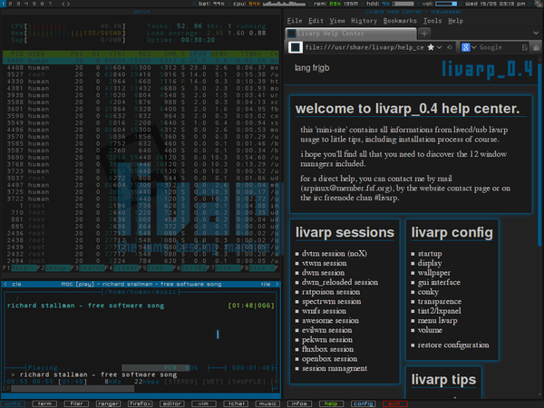

lang fr|gb

the wmfs session
WMFS² is a lightweight and highly configurable tiling window manager for X written in C. wmfs² is a free software distributed under the BSD license. it can be drive from keyboard or mouse and it's configuration stands in one text file easily understandable.
wmfs is french and is developed by Martin Duquesnoy aka xorg62. wmfs is still developing, but is particularly stable and promising with a very active community and motivated devs.
some of its core features include:
- extendible application launcher with autocompletion (prompt).
- built-in system tray.
- Xinerama multi-head support.
- extended window manager hints (EWMH) compliance.
- editable rules for tags/clients.
- complete mouse support.
- on-the-fly configuration reloading.
- dynamic tag creation/deletion.
- statusbar with support for progressbar, color, images (imlib2) and status pipes.
- manual layout: wmfs has no fixed layout, you can create/arrange layouts as you want/need.
- tab, move and resize clients with direction.
- themes support for statusbar and clients.
- ”@include” support split configuration file.
screenshot
{kind=link}
startup
wmfs is launched by the ~/bin/start/wmfs_start.sh script.
to change startup applications, simply edit this file
components
wmfs is sufficient in itself, but I still added a menu managed by fbpanel for ease of use. wmfs menu is available from the top-left corner of your screen.
wmfs has a status bar (optional) including a list of tags, statusText a prompt and a systray.
note that wmfs could work without any bars.
general configuration
to configure fbpanel, edit its configuration file
if you want to add plugins, please visit the dedicated page.
WMFS is configured by its main configuration file in text mode: ~/.config/wmfs/wmfsrc. to modify wmfs, simply edit this file
note: the 'config' button in the wmfs topbar:let-click to edit wmfs configuration files, right-click to edit wmfs bars configuration files.
be careful in modifying configuration files: wmfs is still in development, and even more stable, an error in the config wmfs cause a crash.
wmfs_rules: clients properties
the wmfsrc [rules] section: determine specific behaviors depending on the application, its class, its role (as determined by the command 'xprop'). you can determine the theme used by the application, the tag/screen opening, management (free/tiled/visible everywhere) and its location (in tab).
to configure wmfs 'rules', simply edit the file
#rules for wmfs²
[rules]
[rule]
class = "MPlayer" # second part of WM_CLASS
#instance = "xv" # first part of WM_CLASS
#role = "" # WM_WINDOW_ROLE
#name = "" # NET_WM_NAME
theme = "titleless" # theme to use
#tag = 1 # tag to open
screen = 0 # screen to open
free = true # open free or not
tab = false # open tabbed or not
ignore_tag = false # on all tags or not
[/rule]
(...)
[/rules]
wmfs_themes: wmfs appearance
the wmfsrc [themes] section: define the look of your clients/bars. each element can have a separate theme (indication have to be in wmfsrc)
complete list of the [themes] section options(note: statusline syntax is explained in the [statusbar] section):
- name theme name: will be used in the next sections
- font theme font, in XLFD (X Logical Font Description) format. ex "-*-terminus-medium-*-*-*-12-*-*-*-*-*-*-*"
- bars:
- bars_width: bar height pixels
- bars_fg: statusbar text color
- bars_bg: statusbar color
- tags:
- tags_normal_fg: normal tag text color
- tags_normal_bg: normal tag button color
- tags_normal_statusline: normal tag statusline
- tags_sel_fg: selected tag text color
- tags_sel_bg: selected tag button color
- tags_sel_statusline: selected tag statusline
- tags_occupied_fg: occupied tag text color
- tags_occupied_bg: occupied tag button color
- tags_occupied_statusline: occupied tag statusline
- tags_urgent_fg: urgent tag text color
- tags_urgent_bg: urgent tag button color
- tags_urgent_statusline: urgent tag statusline
- tags_border_color: tag button border color
- tags_border_width: tag button border width
- clients:
- client_normal_fg: normal client titlebar text color
- client_normal_bg: normal client titlebar color
- client_normal_statusline: normal client statusline
- client_sel_fg: selected client titlebar text color
- client_sel_bg: selected client titlebar color
- client_sel_statusline: selected client titlebar statusline
- client_free_statusline: free client titlebar statusline
- frame_bg: client color
- client_titlebar_width: client titlebar height in pixels
- client_border_width: client border width in pixels
wmfsrc configuration
wmfsrc includes all section configuration. here is the full list of options:
- [bars]: wmfs² handles several statusbar if you need. each bar support configuration and theme.
- positon: position of the statusbar on the screen. 0:top, 1:bottom, 2:hide
- screen: screen to display statusbar (start at 0), set to -1 to display on every screen
- elements: ordre d’affichage des composants de la barre. t:tags, s:statustext, y:systray(ne faire apparaitre qu’une fois), l:launcher
- theme: apply theme on the statusbar, must be an existing theme-name
- [tags]: tags configuration: number, name, screen, mousebinds.
- circular: tag wrapping navigation
- screen: screen to display tag. use no screen option or screen = -1 to set tag on each screen
- name: display tagname
- statusline: draw a custom statusline in the specific tag (can display any sequences)
- mousebinds: mouse actions on the tag buttons
- [client]: client theme and behaviour.
- padding: padding between clients in pixels
- autofocus: give focus to new created client (default is false)
- theme: apply theme to client by default (can be overwrite in the [rules] section).
- key_modifier: key modifier to perform actions on clients. (Alt, Super, Control, Shift…)
- focus: select the focus mouse options: enter, focus follow mouse – click, click to focus – everything-else, desable mouse support for client focus(focus in handled by keyboard shortcuts)
- mousebinds: mouse actions on client. see the complete list of UICB functions at the bottom of this page
- [launchers]: wmfs² has a prompt that support autocompletion
- name: launcher-name, will be used in the [keys] section
- prompt: display text at the beginning of the prompt
- command: command used by the launcher. can be an uicb function or an uicb function + extension
- [keys]: les racourcis clavier sont définis dans cette section.
- mod: key modifier’s). ex:{"Control", "Alt"}
- key: key to press.
- func: uicb function to launch (functions list at bottom of this page)
- cmd: if func = spawn, set the command to launch. ex:func = "spawn" cmd = "cream-browser"
statusbar configuration
the wmfs statusbar displays tags and systray, but it can display many other datas with the wmfs -c status command.
this way, you can display result of a bash script, a conky or a simple command. statusbar supports progressbars, graphs, positionbars, colors, rectangles, images and themes.
livarp uses conky to write in the statusbar. topbar includes taglist and informations, bottombar includes launchers and systray.
wmfs -c status possibilities
- basic use:
wmfs -c status "barname TEXT visible on 'barname'" - display colors:
wmfs -c status "barname ^s[position;color;text]" - display rectangles:
wmfs -c status "barname ^R[position;dimensions;color]" - display images (support by imlib2):
wmfs -c status "barname ^i[position;dimensions;imagepath]" - display progressbars:
wmfs -c status "barname ^p[position;dimensions;border;value;valuemax;bgcolor;fgcolor]" - display positionbars:
wmfs -c status "barname ^P[position;dimensions;curser;value;valuemax;bgcolor;fgcolor]" - display graph:
wmfs -c status "barname ^g[position;dimensions;value;valuemax;bgcolor;fgcolor;name]"
mousebinds:
sequences supports mousebinds with format (key;uicb-function) or (key;spawn;command)
example:
popup status:
you can display popups from the statusbar with the mousebind (key;status_surface;position,dimension,color datas)
note: with “status_surface”, the argument “position” is optional. if not given, default position is under the pointer.
syntaxe:
- position: "left/right" (relative position) ou "x;y" (absolute position)
- dimension: “ww;hh” for width;height of the rectangle or the image, to display an image at its original dimension, set it to “0;0”.
- couleur: "#rrggbb"
- imagepath: absolute path for the image
- border: width of the progressbar border in pixels
- curser: width of the curser in the positionbar
- value: a variable, to draw progressbar
- valuemax: maximum value of the ‘value’ used in the progressbar
to display a ”]”, you’ll have to put a “\” as prefix.
when using ^p[...], if w lower than h , the progressbar will be vertical..
wmfsrc integration
the classic wmfs -c status "barname datas" format implies that you’ve declared the ‘barname’ in the [bars] section of your wmfsrc that way:
[bar]
name = "barname"
position = 0
screen = 0
elements = "tlsy" # element order in bar
theme = "default"
[/bar]
keybinds/mousebinds
wmfs is fully controllable from the keyboard: control, launchers, navigation, tags and clients manipulation...
wmfs keybinds/mousebinds are defined in the wmfsrc [keys] section and are available from the wmfs menu:section config:wmfs: shortcuts/keys.
menus:
- wmfs menu: bottom-left corner of your screen
- dmenu: Alt+d
- dmenu-home: Ctrl+Alt+h
control:
- reload wmfs: Ctrl+Alt+r
- quit wmfs: Ctrl+Alt+q or from wmfs menu:exit
- quit livarp: Ctrl+Shift+Alt+q or from wmfs menu:exit
clients:
- close client: Super+q
- toggle free client: Super+f
- previous client: Alt+Shift+Tab
- next client: Alt+Tab
- previous tabbed client: Super+Shift+Tab
- next tabbed client: Super+Tab
- left/right/top/bottom client: Alt+h/l/k/j
- swap client left/right/top/bottom: Ctrl+Shift+h/l/k/j
- tab left/right/top/bottom client: Alt+Shift+h/l/k/j
- untab client: Alt+Shit+u
- move client: Alt+left-click
- resize client: Alt+right-click
- increase client on left: Super+h
- decrease client from left: Super+l
- increase client on top: Super+k
- decrease client from top: Super+j
- decrease client from right: Super+Ctrl+h
- increase client on right: Super+Ctrl+l
- decrease client from bottom: Super+Ctrl+k
- increase client on bottom: Super+Ctrl+j
- integrate client to left: Super+Ctrl+Alt+h
- integrate client to right: Super+Ctrl+Alt+l
- integrate client to top: Super+Ctrl+Alt+k
- integrate client to bottom: Super+Ctrl+Alt+j
navigation:
- previous/next tag: Ctrl+Left/Right
- previous/next screen: Alt+Down/Up
- display tag 'n': Super+F'n' or left-click on tag in the statusbar
- tag client with tag 'n': Super+Shift+F'n'
- add a tag: Super+Shift+-
- delete a tag: Super+-
layout
- horizontal layout: Super+Shift+m
- vertical layout: Super+m
- layout rotate right: Super+r
- layout rotate left: Super+Shift+r
- toggle free client: Super+f
launchers:
- default terminal: Super+Enter
- open prompt: Alt+p
- launch ranger: Alt+r
- launch rox-filer: Alt+Shift+r
- launch firefox: Alt+w
- launch vim: Alt+e
- launch geany: Alt+Shift+e
- launch weechat: Alt+x
- music player: Alt+z
- volume control: Alt+v
UICB functions list
UICB functions list. for “User Interface Call Backs”.
examples:
- in the wmfsrc: func = "tag_next" ou func = "spawn" cmd = "urxvt -e vim"
- in the status.sh: wmfs -c status "barname ^s[position;color;next](1;tag_next)"
- in the terminal: wmfs -c tag_next
- système:
- spawn: execute a command. ex: func = "spawn" cmd = "urxvtc -e screen irssi".
- quit: quit wmfs.
- reload: reload wmfs configuration.
- infobar:
- infobar_toggle_hide: toggle hide infobar. ex: func = "infobar_toggle_hide" cmd = "default" display/hide the “default” bar.
- tags:
- tag_set: display tag by n°. ex: func = "tag_set" cmd = "0" display tag n°0.
- tag: display tag by name. ex: func = "tag" cmd = "web" display named tag ‘web’.
- tag_next: display next tag.
- tag_prev: display previous tag.
- tag_client: tag the client. ex func = "tag_client" cmd = "2" tag client with tag n°2.
- tag_client_and_set: tag the client and display tag.
- tag_move_client_next: tag client with next tag.
- tag_move_client_prev: tag client with previous tag.
- tag_click: display tag with a left-click.
- tag_new: add a tag.
- tag_del: delete atag.
- layouts:
- layout_vmirror: vertical mirror tiling.
- layout_hmirror: horizontal mirror tiling.
- layout_rotate_left: tiling rotate anti-clockwise.
- layout_rotate_right: tiling rotate clockwise.
- layout_prev_set: back to previous set layout.
- layout_next_set: go to next set layout.
- layout_integrate_left: client integration in the left client zone.
- layout_integrate_right: client integration in the right client zone.
- layout_integrate_top: client integration in the top client zone.
- layout_integrate_bottom: client integration in the bottom client zone.
- clients:
- client_close: close client.
- client_resize_right: resize client from the right. ex: "client_resize_right" cmd = "-20" decrease the client from the right.
- client_resize_left: resize client from the left. ex "client_resize_left" cmd = "20" increase the client to the left.
- client_resize_top: resize client from the top.
- client_resize_bottom: resize client from the bottom.
- client_focus_right: move focus on the right.
- client_focus_left: move focus on the left.
- client_focus_top: move focus on top.
- client_focus_bottom: move focus on bottom.
- client_tab_right: move the client in tab on the right client.
- client_tab_left: move the client in tab on the left client.
- client_tab_top: move the client in tab on the top client.
- client_tab_bottom: move the client in tab on the bottom client.
- client_swap_right: swap client with the right client.
- client_swap_left: swap client with the left client.
- client_swap_top: swap client with the top client.
- client_swap_bottom: swap client with the bottom client.
- client_focus_next: move focus to the next client.
- client_focus_prev: move focus to the previous client.
- client_swap_next: swap client with the next client.
- client_swap_prev: swap client with the previous client.
- client_untab: untab the client.
- client_focus_next_tab: move focus to next tab-client.
- client_focus_prev_tab: move focus to previous tab-client.
- client_focus_click: give focus to client with a click.
- client_toggle_free: toggle free the client.
- client_toggle_ignore_tag: toggle ignore_tag the client.
- client_tab_next_opened: open the client in a tab.
- status:
- status: display the argument text in the statusbar.
- status_surface: display a surface. can contain sequences.
- mouse:
- mouse_resize: resize the client.
- mouse_move: move the client.
- mouse_swap: swap clients.
- mouse_tab: tab the client.
- screen:
- screen_next: go to next screen.
- screen_prev: back to previous screen.
- screen_move_client_next: move the client to next screen.
- screen_move_client_prev: move the client to previous screen.
- launcher:
- launcher: native prompt. ex: func = "launcher" cmd = "exec" display the “exec” launcher.